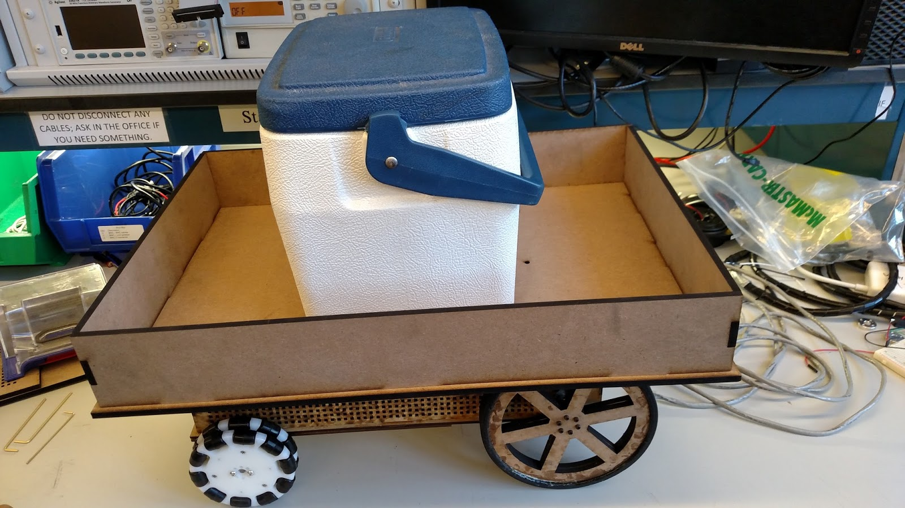
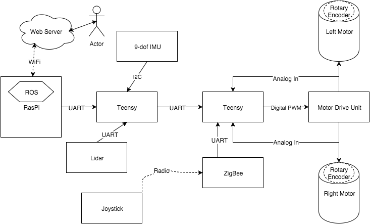
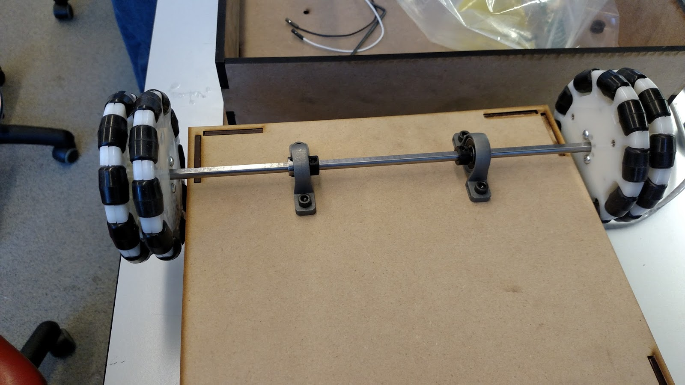

Welcome to Team Caravan's HemoGlobeTrotter Project
Check out the Quick-Start guide to get rolling quickly. For more details on editing the code, read the detail sections below.

Prerequisites
Hardware
- 2 Teensy's
- Driving Chassis:
- 2 electric-motors:
- Recommend 14v control
- Recommend motors with Rotary Encoders
- Motor h-bridge
- 4 wheels:
- Recommend 2 omni-style wheels for front
- Recommend highly-frictious back wheels
- 2 electric-motors:
- 14v (or whatever is necessary for electric-motors), 5v, 3.3v available
- e.g. 12v battery with regulators
- Raspberry Pi with SD card (recommended 8GB+), running Ubuntu (Raspbian may be better, but is untested with our code)
- Wi-Fi module for Raspberry Pi
- IMU Such as this one from Adafruit
- Neato Robot Lidar
- (Optional) 2x mrf24j40ma wireless module and separate controller, e.g. Arduino Uno, for wireless joystick control
Software
- Arduino IDE
- Teensyduino Plug-in for Arduino IDE
- Raspberry Pi Python Libraries (can be installed with pip):
- (Optional) ROS installed on Raspberry Pi
Pinout Links (at time of publication)
Quick-Start Guide
First, make sure you have all of the non-optional prerequisites taken care of. Then, proceed through the following sections:
Communication Wiring
The prepared communication chain is as follows:
- Connect Lidar's UART pins to middle-teensy's Serial 1 pins
- The Lidar pinout site above can describe Lidar version differences, but for our version of Lidar, that meant the Lidar's Orange pin went to Teensy 3.2's pin 0, and Brown pin to pin 1
- Connect Raspberry Pi's UART pins to middle-teensy's Serial 2 pins:
- Rpi Pin 8 to Teensy pin 9
- Rpi pin 10 to Teensy pin 10
- Connect Motor-Teensy's Serial 3 pins to middle-teensy's Serial 3 pins:
- Connect pin 7 to pin 8, and pin 8 to 7 between both Teensys
- Connect the IMU to the middle-Teensy:
- IMU SCL to Teensy pin 19
- IMU SDA to Teensy pin 18
Power Wiring
The following Power Configuration is important to ensure not blowing out the Lidar and making sure that the serial communication works:
- 3.3v goes to the Lidar's DC motor (can give 5v to spin faster)
- One common 5v should run through both Teensy's, the Raspberry Pi, the IMU, and the Lidar
- Do not give the Lidar more than 5v as it will likely blowout
- To connect the Raspberry Pi to voltage pins, you can splice a USB micro B cable, and connect to the red and black wires (NOTE: it may not be entirely standard that red and black are +/-, so be careful depending on your USB plug)
- Important: The Rpi and middle-Teensy need this common ground for Serial communication to work
- Recommended 14v to the H-bridge, then to the motors as per your h-bridge pinout
Motor Wiring
Depending on your motors and H-bridge, connect using the following details about the motor-Teensy:
| Motor 1 | Motor 2 |
|---|---|
| PWM: 22 | PWM: 23 |
| IN_A: 18 | IN_A: 20 |
| IN_B: 19 | IN_B: 21 |
| ENC_A: 2 | ENC_A: 4 |
| ENC_B: 3 | ENC_B: 5 |
Final Steps
Now that everything is wired up, ensure that the Lidar is mounted in a forward-facing direction such that it's line-of-sight is not blocked. NOTE: the Lidar degree has an offset of about -10 degrees. It should be mounted straight, but that means that immediately forward is actually returned as 190 degrees by the Lidar. The code as-is expects this offset.
Install the Teensy Libraries in your Arduino Library folder.
- Put the appropriate Teensy code on each Teensy, and put the rpi_webpy on the Raspberry Pi (or use rpi_webpy_no_ros to start quickly)
- Power on the devices
- SSH into Rpi:
- Edit map file as necessary
- Change contentRoot path name in hemo_web.py file
- Start the hemo_web.py file
- Access the website on the Pi's IP address with the port displayed in the terminal after running (default is 8080)
Details
Overall Workflow
The HemoGlobeTrotter v2.0 is an autonomous robot designed to carry packages, specifically blood, from a source to a destination. It was designed to be very flexibly transported, such that it can be placed in a new environment with a floorplan and go from there.
Electronics
The following Component Diagram shows how the components interact: 
Chassis Hardware
We used Solidworks to design laser-cut MDF to create the robot chassis and payload container. The container had to be at least large enough to hold the coolers used by hospitals to transport packets of blood. The chassis also had to be strong enough to support the weight of such a payload, which is about 15-20 pounds. We doubled-up some of the MDF in the undercarriage to reinforce the strength. These Solidworks files are in the git repo, with the "ToPrint" folder containing DWG files, as well as SLDPRT files with a press-fit-ready shell added.
We had to make a front axle with 2 omni-wheels. The axle had to be wide enough to not rub against the chassis, but we were limited in what hardware was available. We settled on the following design for the left half, and it was mirrored for the right:
wheel -- axle hub -- wheel -- collar ------- pillow block bearing -- collar

The axle was a D-shaft, and all of the hubs/collars/bearings had set screws. These screws kept everything locked on the flat side of the shaft, so that the only point of rotation was the pillow block bearings. The collars (combined with the set screws) kept the wheels/axle from sliding horizontally. Then, the bearings were screwed into the undercarriage of the chassis.
Software
Our main workflow was as follows: Raspberry Pi first parses the map file. From there, it creates an internal map that can be queried for paths and overall shape. Then it hosts a website that shows the map layout. When a request is made through the website, the internal map is queried for a path from the starting position to the desired position. This path is then stored as a queue of steps, containing instructions such as “drive X units” or “turn Y degrees.”
We put a failsafe in place for each Teensy where if they do not receive a serial message from their “superior” within a set timeframe, they default to braking. Due to this, the Rpi will continually send the top of the queue as a message to the middle Teensy. The middle-Teensy keeps track of the last received message, and when receiving a new instruction, it re-zeros heading and distance. Then, it can now attempt to complete the received instruction while keeping track of distance traveled or degrees rotated. Once an instruction is completed, i.e. the proper distance traveled or degrees rotated, the middle Teensy will send an “acknowledgment” message back to the Rpi. This instructions the Pi to pop off that instruction and send the next one in the queue. After each acknowledgment is sent, the middle Teensy sends brake commands until receiving the next, new instruction.
The middle Teensy will then send continuous commands to the motor Teensy as a packet of two velocities: one per motor. However, it does not simply forward the instruction received from the Rpi. First, it scans a range of degrees in front of it for hazards (all of these distances are checked with the Lidar data).
Serial lib
We wrote a custom serial library to communicate between the Raspberry Pi and the middle Teensy. To remain consistent with the existing library used between Teensys, a packet is prefaced with a ‘2’ and terminated with a ‘3’ and were 10 characters long. This caused frustrating limitations, as packets with a 2 or 3 in middle were incorrectly parsed from the serial buffer. Instead of using an English/Arabic character, a unique ASCII character should have been used to identify the start and end of a packet.
The second character in the packet buffer indicates message type: drive forward, backward, turn, or brake. Some other types are defined, such as “info” messages, but those are only for debugging and are not used at runtime.
Following the message type is any necessary information. For example, turn would be followed by a 2-digit degree. Drive is followed by a 2-digit distance.
Lidar lib
We also wrote a library to parse the Lidar packet data. This code is run in every loop of the middle Teensy. We ran into a few problems with poor Lidar data when looking at reflective surfaces. The Lidar packets do include a "strength" indicator, which is essentially a confidence level. These indicators are supposed to indicate, for example, reflective surfaces, however our current implementation does not check this indicator. This could be a future step.
The new library (using only 11% of the available RAM on a Teensy, down from the initial 350% which was obviously too much) simply reads the Lidar's serial data until it sees the start byte (0xFA). From there, it reads up to 22 consecutive bytes (a complete packet) or until seeing another start byte, thus indicating missing data for that packet. Once a complete packet is read, it is processed for the 4 distances that it contains. Each valid distance is stored in an array of 360 values -- one per degree. Therefore, at any given moment this array will contain the most up-to-date and valid distance received from the Lidar. For some odd reason, the Lidar seems to very infrequently provide valid data for even degree values. This could perhaps be due to the rotation speed. Either way, a 2-degree precision should be plenty to detect obstacles and walls. The packet also indicates if data is poor for a given distance. If it is, we zero out the distance. This is to have the middle Teensy avoid using stale data, if a given degree fails to give good data for a significant length of time. Any distance of 0 is ignored by the middle Teensy.
middle-man parameters
There are some configurable parameters defined at the top of the middle Teensy code:
- drive_vel: the speed used by each wheel for forward driving
- turn_vel: the speed used by each wheel (one would be negative) to turning
- turnLength: a delay (in ms) used between direction changes to let the momentum settle
- turnThreshold: a distance (in mm) to check clearance before initiating a turn
- checkObstacles: a bool to toggle hazard avoidance
- checkHallway: a bool to toggle hallway centering
- moveTimeout: a timeout duration (in ms) between messages before initiating failsafe-brake
- doorRange: the distance (in mm) for stopping in front of a door
- hazardRange: the distance threshold (in mm) that defines a hazard
- wallDiff: the delta threshold (in mm) that defines being out of center
- wallIgnoreRange: the max distance (in mm) where hallways are ignored if not centered (for example, driving through an atrium or some place where being centered does not make sense)
The following are degree ranges (with -10 degree offset) for directions
// used for scanning for hazards
#define F_START 150
#define F_END 230
// used for checking left turn and hallway centering
#define L_START 279
#define L_END 281
// used for checking right turn and hallway centering
#define R_START 99
#define R_END 101
Map file
Here is an example map file format:
N 90 2
P -90 4
1 17 0
N 90 3
P -90 1
2 99 90 40
N 90 4
P -90 2
3 17 180
N 90 1
P -90 3
4 99 270
Each line preceded with an integer are hallway definitions. The format is:
[Hallway ID] [Length] [Degrees] (optional door distance)
Each hallway is defined as a length, and degree-orientation offset from the bot’s initial orientation. The lines above a given hallway define its neighbors as below. The door distance is optional, and indicates how far along the hallway there might be a door blocking the path.
Each line preceded with “N” is a hallway that the bot can travel next to, from the current hallway. “P” (for previous) is a hallway that the bot would come from to arrive at the current hallway. The format is:
N/P [Degrees] [Hallway ID]
Degrees indicate how many degrees should be turned to align on this hallway, and ID is used to lookup the hallway details (e.g. length and global orientation).
ROS
We had initially desired to use ROS for SLAM. However, the Raspberry Pi only had one set of serial pins, which we would have used for the Lidar but had to use to communicate to the middle Teensy instead. We were also unable to get any of the ROS IMU packages to compile. We fully believe this is mostly because we had installed Ubuntu instead of Raspbian. A future improvement would be to use Raspbian instead so that ROS could be utilized more. As-is, the only ROS package is the web.py script, which simply starts the website. This is because the Pi has no usable input data to integrate with ROS packages. We considered sending Lidar and IMU data from the middle Teensy to the Rpi, however the serial pipe between the two was already very full with the continuous instructions (necessary to avoid the failsafe-brake).
Authors and Contributors
Project made by Adam Van Aken and Omkar Nalawade